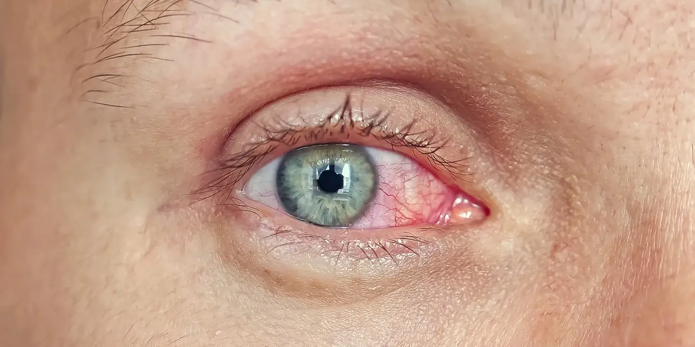

JPsA Szemgyulladás (Uveitis)
Az uveitis (szem ér gyulladás) több okból is kialakulhat, de az immunbetegségekhez tipikusan az uveitisnek egy altípusa köthető. Ez az endogén uveitis vagyis belső működéshez kőthető szem ér gyulladás. Röviden az endogén anterior uveitis, vagyis a szem külső részének ér gyulladása amely belső okból alakult ki és nem sérülés vagy fertőzés okozta.
Milyen tüneteket okoz az uveitis és mit okozhat?
Az anterior endogén uveitis rendkívül aggresszív szemgyulladást okoz amely erős szemfájdalommal és fényérzékenységgel jellemezhető a legjobban. Az uveitis rendkívül akár közvetlenül okozhat vakságot ha nincs időben megfelelően szteroiddal kezelve.
A sok vérben gazdag ér, könnyebben és gyorsabban szállítja a gyulladásos sejteket, ezzel elősegítve a látás drasztikus romlását. Sokan azt gondolják hogy ez a szembetegség elkapható mint egy kötőhártya gyulladás, de mivel az endogén anterior uveitis belső eredetű, így csak a szervezet saját téves működése képes kiváltani és fenntartani.

Ennek a szembetegségnek közvetlen szerepe van ebben a JPsA immunbetegségnek a működésésben, ugyanis az immunbetegség kifejezetten kedveli a vérben gazdag területeket mivel, itt tudja a legjobban befolyásolni a szervezet immunválaszát.
Mennyire gyakori az uveitis a JPsA betegek körében?
Mivel a szem érintettsége rendkívül ritka még immunbetegsések esetén is, így JPsA esetén az uveitis előfordulása 6,6% - 15% közöttire tehető. Ha kizárólag az endogén anterior uveitist (belső eredetű szivárványhártyát érintő szemgyulladás) vizsgáljuk akkor egészen pontosan körülbelül 100 JPsA betegből 6-14 embernél fordul elő, letöbb esetben teljesen tünetmentesen, azaz a beteg nem érez fájdalmat a gyulladás aktivitása alatt.
Mivel kezelhető az uveitis?
Mivel ezt a fajta uveitist az immunbetegség élteti, így több féle módon is kezelhető az alapbetegség (a JPsA) aktivitásától függően. A JPsA nyugodtabb, kevésbé aktívabb szakaszában és az első kiújulásoknál (visszatérő uveitis) csak tüneti kezelést alkalmaznak, például szteroidos szemcseppet.
Ezek a helyi szteroidos szemcseppek helyileg csökkentik a gyulladást a szemben, az alap immunbetegséget nem kezelik, így a szemcseppes kezelés után gyakran viszzatér a szemgyulladás.

Azonban fontos azt is hangsúlyozni hogy a hosszú ideig tartó szteroidos szemcsepp hatására a szem komolyabban is károsodhat. Ezek közé a mellékhatások közé tartozik többek közt a súlyos szemszárazság, a zöld és szürkehályog kialakulásásnak nagyobb esélyü kialakulása is.
Amikor a szemcseppek már nem tudják megakadályozni a visszatérő uveitist akkor az orvosok felajánlhatnak szteroidos szem injekciót, amelyet helyi érzéstelenítés után a szemgolyó alá adnak, ezzel órákon belül teljesen lehozzák az uveitist.
Mivel ez az injekció sokkal erősebb szteroid így egy egészséges, nem gyulladt szembe adva könnyen okozhat látás károsodást vagy akár vakságot is, ugyanis a szteroid nagy mértékben és drasztikusan emeli a szemnyomást, ezzel addig növelve a szem belső nyomását amíg a látóideg (a látásért felelős belsö ideg) károsodik, ezzel maradandó látáskárosodást okoz.
Milyen uveitis van még?
Az uveitis kialakulhat kötőhártya gyulladás vagy szemsérülés után, annyi különbséggel hogy ezek gyógyíthatóak mivel nme immunbetegség a kiváltó ok.